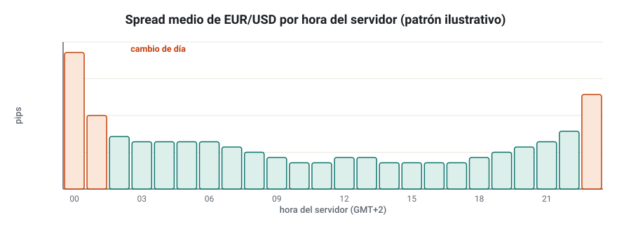
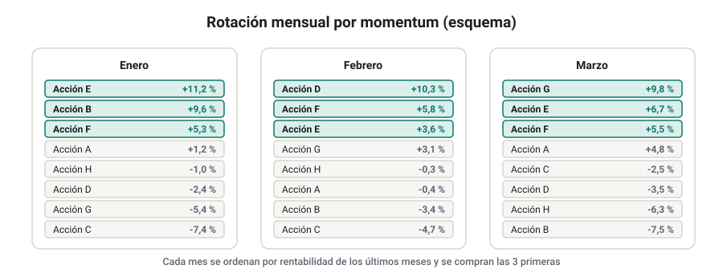
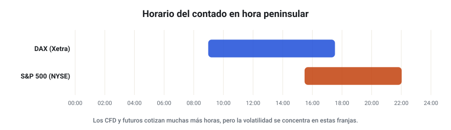
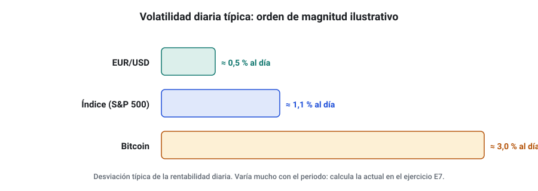

SEMANA 17 · ETAPA 5 · PROFESIONALIZACIÓN
Investigación especializada
Presentación de la semana
Empieza la última etapa. Ya dominas el proceso completo: datos, generación, validación, cartera y ejecución. Esta semana lo aplicarás de forma especializada a cada uno de los cuatro mercados del curso, cada uno con su horizonte natural: Forex a corto plazo, acciones a medio y largo plazo, índices en intradía y swing, y criptomonedas. Verás qué funciona razonablemente en cada uno, qué trampas tiene y cómo adaptar el protocolo. Terminarás eligiendo un mercado para tu proyecto final y haciendo una primera investigación a fondo.
Objetivos
Al terminar la semana sabrás:
- Investigar Forex a corto plazo con especial atención a costes, sesiones y noticias.
- Plantear estrategias de acciones a medio y largo plazo y sus particularidades.
- Investigar índices en intradía y swing con sus horarios y gaps.
- Tratar los horizontes y riesgos específicos de las criptomonedas.
- Elegir el mercado de tu proyecto final con criterios objetivos.
Plan de la semana (22–25 horas)
| Bloque | Horas | Qué harás |
|---|---|---|
| Clases | 5 | Cinco lecciones: lectura y vídeos |
| Prácticas | 13 | Investigación a fondo del mercado elegido |
| Investigación y evaluación | 4 | Investigación I-17, entrega y examen |
| Revisión y planificación | 2 | Glosario, cuaderno y plan del proyecto final |
Qué necesitas
- SQX y datos revisados del mercado que elijas (semana 9).
- Tu protocolo de validación (semana 12) y tu plantilla de cartera.
Criterio para desbloquear la semana 18
Tener en estado APROBADO, con un 80 % o más cada uno:
- ☐ Examen de la semana 17
- ☐ Entrega práctica: ficha de mercado y propuesta de proyecto final
- ☐ Investigación I-17: los ocho pasos documentados
Forex a corto plazo
Formato: clase de 35 minutos · Lectura: 30 minutos
Lo que lo hace especial
- Costes muy bajos en los pares principales, pero que pesan mucho a corto plazo (semana 7).
- Sesiones muy marcadas: la liquidez y la volatilidad cambian con la hora (semanas 1 y 8).
- Noticias macroeconómicas a hora fija: empleo de EE. UU., decisiones de bancos centrales, inflación. En esos minutos, el spread se abre y el deslizamiento se dispara.
- Mercado OTC: cada broker tiene sus precios (semana 9).

Cómo adaptar el protocolo
- Temporalidad mínima razonable: M15–H1. Por debajo, los costes deciden.
- Spread variable: si tus datos lo permiten, haz el backtest con el spread real de cada momento, no con uno fijo.
- Filtro de noticias: decide si la estrategia opera o no en las horas de noticias importantes y pruébalo; no lo añadas después de ver el resultado.
- Evita el cambio de día (alrededor de las 00:00 del servidor), cuando el spread suele ampliarse.
- Prueba en varios pares principales (semana 12).
Ideas habituales
Rupturas de la sesión de Asia al abrir Europa, reversión en horas tranquilas, momentum en H1–H4 tras datos importantes. Todas ellas muy estudiadas: si funcionan, su ventaja suele ser pequeña.
Comprueba que lo has entendido
- ¿Por qué se evita operar alrededor del cambio de día?
- ¿Cómo tratarías las noticias en una estrategia de M15?
- ¿Qué temporalidad mínima usarías en Forex y por qué?
Acciones a medio y largo plazo
Formato: clase de 35 minutos · Lectura: 30 minutos
Lo que lo hace especial
- Miles de activos: la investigación suele hacerse sobre un universo (por ejemplo, las acciones de un índice), no sobre un activo.
- Ajustes y sesgo de supervivencia (semanas 2 y 9).
- Resultados empresariales trimestrales: gaps fuertes en las fechas de publicación.
- Horario limitado y gaps diarios.
- Tendencia alcista de largo plazo de los índices: cualquier estrategia solo compradora parece buena; compárala siempre con comprar y mantener (semana 12).
Estrategias habituales
- Rotación por momentum relativo: comprar cada mes las acciones con mejor rentabilidad de los últimos meses de un universo (semana 7).
- Reversión a corto plazo en acciones grandes: comprar caídas fuertes de pocos días dentro de una tendencia alcista.
- Filtros de régimen del índice: solo comprar si el índice está por encima de su media de 200 sesiones.

Limitaciones de SQX
SQX trabaja con un símbolo por estrategia. Las estrategias de rotación entre muchas acciones se adaptan mal a ese esquema: suelen investigarse con otro software, con la hoja de cálculo o con programación. En SQX puedes investigar estrategias de una acción concreta o de un índice, y combinarlas en cartera.
Comprueba que lo has entendido
- ¿Por qué una estrategia solo compradora de acciones debe compararse con comprar y mantener?
- ¿Qué problema tienen las fechas de resultados para una estrategia de swing?
- ¿Por qué SQX se adapta mal a una rotación entre muchas acciones?
Índices: intradía y swing
Formato: clase de 35 minutos · Lectura: 30 minutos
Lo que lo hace especial
- Apertura y cierre del mercado de contado concentran la volatilidad, aunque el CFD o el futuro coticen casi todo el día.
- Gaps entre el cierre y la apertura del día siguiente, mayores en los fines de semana.
- Sesgo alcista de largo plazo y caídas rápidas (la volatilidad sube cuando el mercado cae).

Estrategias habituales
- Ruptura del rango de apertura (semana 7) en la primera hora del contado.
- Reversión intradía tras movimientos fuertes en índices muy líquidos.
- Swing con filtro de régimen: comprar retrocesos en tendencia alcista, con stops amplios.
Cómo adaptar el protocolo
- Sesión correcta en SQX (semana 5): la del contado o la del CFD, según la lógica.
- Gaps: cierra las posiciones intradía antes del cierre del contado; en swing, incluye el riesgo de gap en el Monte Carlo.
- Costes de financiación en CFD para posiciones de varios días.
- Compara con comprar y mantener el índice.
Comprueba que lo has entendido
- ¿Por qué la apertura del contado es importante aunque el CFD cotice casi todo el día?
- ¿Qué riesgo añade mantener una posición de índice durante el fin de semana?
- ¿Con qué benchmark compararías una estrategia de swing solo compradora en el DAX?
Criptomonedas: horizontes y riesgos
Formato: clase de 30 minutos · Lectura: 25 minutos
Lo que lo hace especial
- 24 horas, 7 días: no hay cierre ni gaps de fin de semana, pero sí horas de muy poca liquidez.
- Volatilidad muy alta: movimientos diarios que en Forex serían excepcionales.
- Historia corta y cambiante (semana 9).
- Riesgos de contraparte y de custodia (semana 2), y regulación en evolución (por ejemplo, el reglamento europeo MiCA).
- Costes: comisiones y spreads mayores que en Forex; en CFD, financiación elevada.

Cómo adaptar el protocolo
- Tamaño de posición: con stops en ATR, la posición sale mucho más pequeña que en Forex. Respétalo.
- Monte Carlo con colas gruesas: los movimientos extremos son frecuentes (semana 3).
- Periodos de prueba: separa los distintos regímenes (euforias y caídas largas) y comprueba que la estrategia no depende de uno solo.
- Exchange o broker de ejecución: investiga con sus datos o con un índice compuesto.
Horizontes
Las estrategias de tendencia y momentum en H4–D1 son las más estudiadas en cripto. A corto plazo, los costes y la calidad del dato son un obstáculo mayor que en Forex.
Comprueba que lo has entendido
- ¿Qué implica la alta volatilidad para el tamaño de posición?
- ¿Por qué hay que separar regímenes al probar en cripto?
- Nombra dos riesgos de las criptomonedas que no existen en Forex.
Taller: investigación del mercado elegido
Formato: taller guiado de 60 minutos · Práctica: 10–12 horas
Paso 1 · Elige el mercado
Puntúa del 1 al 5 los cuatro mercados con estos criterios y elige el de mayor puntuación (o justifica otra elección):
| Criterio | Forex | Acciones | Índices | Cripto |
|---|---|---|---|---|
| Calidad y coste de los datos que tienes | ||||
| Costes de operar con tu broker | ||||
| Horario compatible con tu vida | ||||
| Encaje con tu perfil de riesgo | ||||
| Resultados de tus investigaciones previas |
Paso 2 · Ficha de mercado
Redacta la ficha: instrumentos, horario, costes, datos, riesgos específicos y particularidades para el protocolo.
Paso 3 · Hipótesis
Escribe tres hipótesis para ese mercado y elige una para la investigación I-17.
Paso 4 · Investigación
Aplica los ocho pasos y el protocolo completo a la hipótesis elegida.
Paso 5 · Propuesta de proyecto final
Redacta en una página la propuesta de tu proyecto final (semana 20): mercado, pregunta de investigación, datos, estrategias candidatas y calendario.
Comprueba que lo has entendido
- ¿Qué mercado elegiste y con qué puntuación?
- ¿Qué particularidad de ese mercado cambia más tu protocolo?
- ¿Cuál es la pregunta de investigación de tu proyecto final?
Glosario de la semana
| Término | Inglés | Definición |
|---|---|---|
| Cambio de día | Rollover / daily close | Momento en que el broker cierra el día y suele ampliar el spread |
| Contado (índices) | Cash market | Mercado de las acciones que componen el índice, con su horario oficial |
| Ficha de mercado | Market profile | Documento con las características de un mercado para investigarlo |
| Filtro de noticias | News filter | Regla que evita operar en torno a publicaciones importantes |
| MiCA | Markets in Crypto-Assets | Reglamento europeo sobre criptoactivos |
| Publicación de resultados | Earnings release | Presentación trimestral de las cuentas de una empresa |
| Rotación | Rotation | Estrategia que cambia periódicamente los activos de la cartera |
| Spread variable | Variable spread | Spread que cambia con la hora y las condiciones del mercado |
Ejercicios obligatorios
E1 · Spread por hora. Mide durante tres días el spread de EUR/USD en tu demo a seis horas distintas, incluida la del cambio de día. Presenta la tabla.
E2 · Calendario. Consulta un calendario económico y anota las cinco publicaciones más importantes para EUR/USD de la próxima semana, con su hora peninsular.
E3 · Benchmark de acciones. Compara el resultado de 5 años de una estrategia solo compradora en un índice (de tus proyectos) con comprar y mantener el índice.
E4 · Resultados. Elige una acción y anota las cuatro últimas fechas de publicación de resultados y el gap de apertura de cada una.
E5 · Horario de índices. Comprueba en tu broker el horario del CFD del DAX y del S&P 500 y compáralo con el del contado.
E6 · Gaps de fin de semana. Calcula el gap medio entre el cierre del viernes y la apertura del lunes de un índice durante las últimas 20 semanas.
E7 · Volatilidad. Calcula la desviación estándar de las rentabilidades diarias de los últimos 90 días de EUR/USD, un índice y Bitcoin. Compara con la figura 17.4.
E8 · Tamaño en cripto. Con 10.000 €, un riesgo del 0,5 % y un stop de 2 ATR, calcula el tamaño de una posición en Bitcoin con un ATR diario de 2.500 $ (EUR/USD a 1,08).
E9 · Matriz de elección. Rellena la matriz del taller con tus puntuaciones justificadas.
E10 · Propuesta. Redacta la propuesta de proyecto final.
Investigación I-17 y entrega práctica
Investigación I-17 · Primera investigación especializada
Aplica los ocho pasos y el protocolo completo a la hipótesis elegida en el paso 3 del taller, con las adaptaciones de tu mercado.
Entrega práctica · Ficha de mercado y propuesta de proyecto
Qué entregar
| Archivo | Contenido |
|---|---|
CODIGO_S17_ENT |
Matriz de elección, ficha de mercado, tres hipótesis y propuesta de proyecto final |
CODIGO_S17_INV |
Investigación I-17 completa |
| Ejercicios | E1 a E10 |
Cómo se evaluará
Se valora que la elección del mercado esté justificada con criterios, que la ficha recoja sus particularidades y que la investigación adapte el protocolo a ellas.
Examen de la semana 17 · Variante A
Tiempo orientativo: 60 minutos · Puntuación: 100 puntos · Aprobado: 80 puntos · Puedes usar calculadora, pero no el material del curso ni el tutor de IA. Si suspendes, repetirás con otra variante.
Parte A · Opción múltiple (30 puntos, 2 por pregunta)
Parte B · Cálculo (45 puntos, 15 por ejercicio)
B1. Una estrategia de EUR/USD M15 gana de media 6 pips brutos por operación. El spread medio es de 0,8 pips, pero a la hora del cambio de día sube a 3 pips, y el 10 % de sus operaciones se abren a esa hora. a) Calcula el spread medio ponderado de sus operaciones. b) Calcula el beneficio neto medio (solo spread). c) ¿Cuánto mejoraría si evitara esa hora (suponiendo que las demás operaciones no cambian)?
B2. Con 10.000 €, un riesgo del 0,5 % y un stop de 2 ATR, calcula el tamaño en Bitcoin si el ATR diario es de 2.500 $ y el EUR/USD está a 1,08. Compáralo con el tamaño en euros nominales que supone si el Bitcoin cotiza a 90.000 $.
B3. Un índice tuvo en 20 fines de semana estos gaps (en %, valor absoluto): 0,3; 0,8; 0,2; 1,5; 0,4; 0,6; 0,1; 2,1; 0,5; 0,3; 0,7; 0,2; 0,9; 0,4; 3,2; 0,6; 0,2; 0,5; 0,3; 1,1. a) Calcula el gap medio y la mediana. b) ¿Qué porcentaje de fines de semana superó el 1 %? c) Si tu stop está a un 1,2 % del precio, ¿en cuántos fines de semana se habría saltado el stop por el gap?
Parte C · Razonamiento (25 puntos)
En un máximo de 250 palabras: justifica el mercado que has elegido para tu proyecto final con los criterios de esta semana, y explica qué dos particularidades de ese mercado incorporarás a tu protocolo.